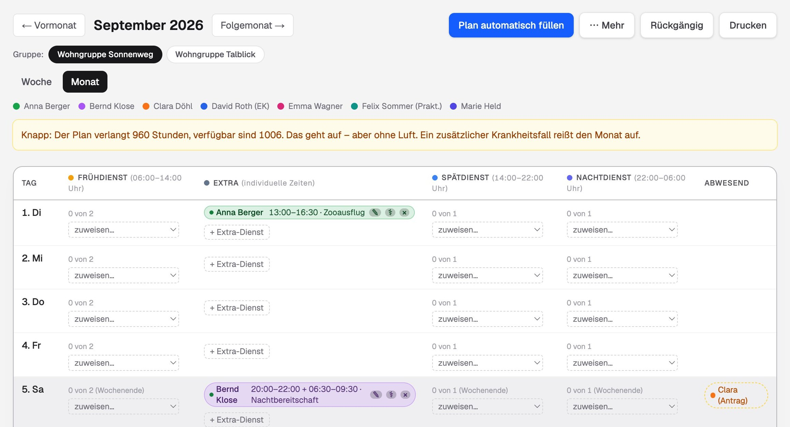
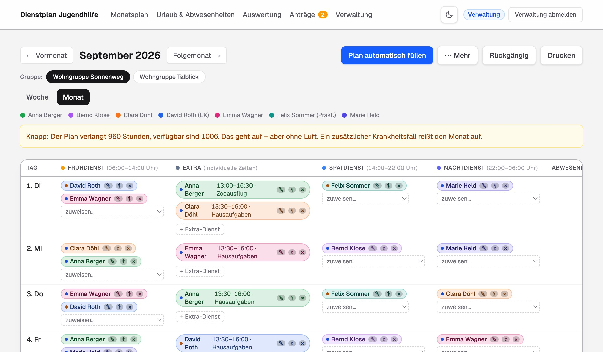

![Der Monatsplan der Anwendung für September: oben die Knöpfe „Plan automatisch füllen“, „Mehr“, „Rückgängig“ und „Drucken“, darunter Reiter für zwei Wohngruppen, eine Namenslegende und eine gelbe Leiste, die vorrechnet, dass die Stunden des Teams knapp reichen. Die Tabelle hat je Tag eine Zeile und die Spalten Frühdienst, Extra, Spätdienst, Nachtdienst und Abwesend; die eingeteilten Namen stehen als farbige Felder darin, in der Spalte Extra ein Zooausflug am Nachmittag. Beispieldaten, alle Namen erfunden.](bilder/monatsplan.jpg)
01 Planen
Der Monat auf Knopfdruck.
Ihr bestimmt, wie verteilt wird. Den Rest macht ein Knopf.
- Fair nach Stunden-Soll: Wer sein Soll am wenigsten erfüllt hat, ist zuerst dran; Urlaub und Wunschfrei sind eingerechnet. Oder „Nach Verwaltungsvorgaben“: erst eure festen Zyklen, dann Nachtdienst-Ziele und Stundenkontingente.
- Das letzte Wort habt ihr: Was schon drinsteht, bleibt. „Rückgängig“ oder Strg+Z nimmt im Monatsplan Schritt für Schritt zurück, bis hin zu einem ganzen Füllen.
In Sekunden steht ein ganzer Monat
Monatsplan · vorher und nachher


![Die Tages-Abdeckung unter dem Monatsplan für September: je Tag eine Zeile mit einem Balken von 0 bis 24 Uhr, in halbe Stunden geteilt und grün eingefärbt – je dunkler, desto mehr Personen sind laut Dienstzeiten da, hellgrau heißt niemand eingeplant. Unter jedem Werktag liegt nachmittags eine orange Marke für die Hot-Phase, unter den Samstagen eine am Vormittag; über den Marken ist der Balken dunkler als am Abend. Am 5. wird der Balken abends dunkler und bleibt es über Mitternacht bis in den Morgen: Die Nachtbereitschaft zählt mit.](bilder/tagesabdeckung.jpg)

![Der Aushang „Wer ist da?“ einer Wohngruppe für September: oben die Legende der Dienste und eine Erklärzeile zum Nachtdienst, darunter je Person eine Spalte und je Tag eine Zeile, die Dienste als farbige Felder mit Uhrzeit. Ein Nachtdienst ist ein Feld über zwei Zeilen in zwei Hälften – „ab 22:00“ in der Zeile seines Tages, „bis 06:00“ in der Zeile des nächsten Morgens. Hat die Person am nächsten Tag selbst einen Eintrag, etwa eine zweite Nacht, steht der Morgen dort oben als kleines Feld „↓ bis 06:00“.](bilder/druckansicht.jpg)